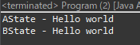

[Design pattern] 3-6. ステートパターン(State pattern)
こんにちは。明月です。
この投稿はデザインパターンのステートパターン(State pattern)に関する説明です。
ステートという意味では状態です。つまり、クラスの状態により処理する結果が別々になる意味です。
よく見るとストラテジーパターンと似ている構造になりますが。。。
差異を置いたらストラテジーパターンはストラテジーインスタンスにより外部の値が変わることだし、ステートパターンはステートインスタンスにより内部の値が変わることだと思います。
実は、デザインパターンというのは実務でこれはこのパターンという定義されていることではなく、その内容だけ理解して使ったら良いでしょう。

#pragma once
#include <stdio.h>
#include <iostream>
using namespace std;
// ステートパターンインターフェース
class IState {
public:
// 関数抽象化
virtual void print(const char* str) = 0;
virtual ~IState() {};
};
// AStateのステートパターンクラス、IStateインターフェースを継承
class AState : public IState {
public:
// 関数再定義
void print(const char* str) {
// コンソールに出力
cout << "AState - " << str << endl;
}
};
// BStateのステートパターンクラス、IStateインターフェースを継承
class BState : public IState {
public:
// 関数再定義
void print(const char* str) {
// コンソールに出力
cout << "BState - " << str << endl;
}
};
// ステートパターンを使うクラス
class Context {
private:
// ステートパターンのメンバー変数
IState* state;
public:
// コンストラクタ、初期状態を設定
Context(IState* state) {
// ステートを設定する関数を呼び出す。
this->setState(state);
}
// ステート設定関数
void setState(IState* state) {
// メンバー変数設定
this->state = state;
}
// 実行
void run() {
// ステートパターンのprint関数を呼び出す。
this->state->print("Hello world");
}
};
// 実行関数
int main()
{
// ステートパターンのインスタンス生成
AState astate;
BState bstate;
// Contextのインスタンス生成、最初にAStateインスタンスの状態を設定する。
Context context(&astate);
// Contextインスタンスのrun関数を呼び出す。
context.run();
// ステートをBStateに設定する。
context.setState(&bstate);
// Contextインスタンスのrun関数を呼び出す。
context.run();
return 0;
}
ストラテジーパターンには多分、run関数に何かの値を受け取ります。つまり、run関数で値を受け取ってストラテジーパターンにより別の値がリターンすることだし、ステートパターンはrunの関数で値を受け取ることではないですが、ステートインスタンスにより内部処理が変わったということです。
私が知っているストラテジーパターンとステートパターンの差異はこれです。実は私も実務でストラテジーパターン、ステートパターンを区切りして使うことではありません。ただ仕様に合わせてパターンを使うことで。。
import java.util.HashMap;
import java.util.Map;
// ステートパターンのインターフェース
interface IState {
// 関数抽象化
void print(String str);
}
// AStateのステートパターンクラス、IStateインターフェースを継承
class AState implements IState {
// 関数再定義
public void print(String str) {
// コンソールに出力
System.out.println("AState - " + str);
}
}
// BStateのステートパターンクラス、IStateインターフェースを継承
class BState implements IState {
// 関数再定義
public void print(String str) {
// コンソールに出力
System.out.println("BState - " + str);
}
}
// Processクラス
class Process {
// flyweightパターンのマップ
private Map<Class<? extends IState>, IState> flyweight = new HashMap<>();
// ステートパターンのメンバー変数
private IState state = null;
// コンストラクタ
public Process(Class<? extends IState> clz) {
// ステート設定
setState(clz);
}
// flyweightパターンでステートパターンのインスタンスを取得関数
private IState getState(Class<? extends IState> clz) {
// flyweightマップにクラスタイプがあるかどうか確認
if (!flyweight.containsKey(clz)) {
try {
// なければ、インスタンスを生成して入力
flyweight.put(clz, clz.getDeclaredConstructor().newInstance());
} catch (Exception e) {
// Exception処理をRuntimeException処理に変換
throw new RuntimeException(e);
}
}
// ステートパターンのインスタンスを取得
return flyweight.get(clz);
}
// ステートパターンのタイプを入力
public void setState(Class<? extends IState> clz) {
// flyweightマップからインスタンス取得
this.state = getState(clz);
}
// 出力関数
public void run() {
// ステートパターンのprint関数を呼び出す。
this.state.print("Hello world");
}
}
// 実行クラス
class Program {
// 実行関数
public static void main(String[] args) {
// Processインスタンス生成、ステートパターンのタイプを設定
Process process = new Process(AState.class);
// run関数を呼び出す。
process.run();
// ステートパターンのタイプ設定
process.setState(BState.class);
// run関数を呼び出す。
process.run();
}
}

ステートパターンもストラテジーパターンと同じ構造でflyweightパターンを使ってステートパターンのインスタンス生成を最小化にしました。そしてインスタンスの再使用率を高めにしてシステムの性能を上げられます。
using System;
using System.Collections.Generic;
// ステートパターンのインターフェース
interface IState
{
// 関数抽象化
void Print(String str);
}
// AStateのステートパターンクラス、IStateインターフェースを継承
class AState : IState
{
// 関数再定義
public void Print(String str)
{
// コンソールに出力
Console.WriteLine("AState - " + str);
}
}
// BStateのステートパターンクラス、IStateインターフェースを継承
class BState : IState
{
// 関数再定義
public void Print(String str)
{
// コンソールに出力
Console.WriteLine("BState - " + str);
}
}
// Processクラス
class Process
{
// flyweightパターンのディクショナリ
private Dictionary<Type, IState> flyweight = new Dictionary<Type, IState>();
// ステートパターンのメンバー変数
private IState state = null;
// コンストラクタ
public Process(Type clz)
{
// ステート設定
SetState(clz);
}
// flyweightパターンでステートパターンのインスタンスを取得関数
private IState GetState(Type clz)
{
// flyweightディクショナリにクラスタイプがあるかどうか確認
if (!flyweight.ContainsKey(clz))
{
// なければ、インスタンスを生成して入力する。
flyweight.Add(clz, Activator.CreateInstance(clz) as IState);
}
// ステートパターンのインスタンス取得
return flyweight[clz];
}
// ステートパターンのタイプを入力
public void SetState(Type clz)
{
// flyweightディクショナリからインスタンス取得
this.state = GetState(clz);
}
// 出力関数
public void Run()
{
// ステートパターンのPrint関数を呼び出す。
this.state.Print("Hello world");
}
}
// 実行クラス
class Program
{
// 実行関数
static void Main(string[] args)
{
// Processインスタンス生成、ステートパターン設定
Process process = new Process(typeof(AState));
// Run関数を呼び出す。
process.Run();
// ステートパターン設定
process.SetState(typeof(BState));
// Run関数を呼び出す。
process.Run();
// 任意のキーを押してください
Console.WriteLine("Press Any key...");
Console.ReadLine();
}
}
ステートパターンもストラテジーパターンと同じ目的で使います。クラスの結合度を低くして再使用率を高めにするために使うでしょう。
ただ、その差異はストラテジーパターンは外部の値がパターンにより別々の結果を出すこと、ステートパターンはパターンにより内部値が別々の結果を出すことです。
ここまでデザインパターンのステートパターン(State pattern)に関する説明でした。
ご不明なところや間違いところがあればコメントしてください。
- [Design pattern] 3-6. ステートパターン(State pattern)2021/11/17 20:04:47
- [Design pattern] 3-5. メメントパターン(Memento pattern)2021/11/16 20:01:36
- [Design pattern] 3-4. イテレータパターン(Iterator pattern)2021/11/15 19:31:28
- [Design pattern] 3-3. コマンドパターン(Command pattern)2021/11/05 17:01:42
- [Design pattern] 3-2. 責任の連鎖パターン(Chain of responsibility pattern)2021/11/04 19:27:58
- [Design pattern] 3-1. ストラテジーパターン(Strategy pattern)2021/11/03 18:38:52
- [Design pattern] 2-7. ファサードパターン(Facade pattern)2021/11/02 19:32:31
- [Design pattern] 2-6. プロキシパターン(Proxy pattern)2021/11/01 19:42:44
- [Design pattern] 3-6. ステートパターン(State pattern)2021/11/17 20:04:47
- [Design pattern] 3-5. メメントパターン(Memento pattern)2021/11/16 20:01:36
- [Design pattern] 3-4. イテレータパターン(Iterator pattern)2021/11/15 19:31:28
- [CentOS] Linux環境(CentOS)でCassandra(NoSQL DB)をインストールする方法(DBeaverブラウザでNoSQL使い方)2021/11/12 17:33:58
- [Design pattern] 3-3. コマンドパターン(Command pattern)2021/11/05 17:01:42
- [Window] apache-tomcatでロードバランシング(Load balancing)する方法とセッションクラスタリング（セッション共有）2021/11/05 16:58:45
- [Window] Apacheでmod_jkとmod_proxyの差異、apacheでtomcatのwebsocketのプロキシフォーワードする方法2021/11/05 16:55:05
- [PHP] Apache環境の同じホスト中でPHPとJava(Servlet)を同時に起動、運用する方法2021/11/05 16:52:04
- [C#] 61. ウィンドウフォーム(Window form)でスレッド(Thread)を使い方、クロススレッド問題解決2021/11/04 19:29:51
- [Design pattern] 3-2. 責任の連鎖パターン(Chain of responsibility pattern)2021/11/04 19:27:58
- [Design pattern] 3-1. ストラテジーパターン(Strategy pattern)2021/11/03 18:38:52
- [C#] 60. ウィンドウフォーム(Window form)のイベント設定する方法2021/11/02 21:18:08
- [Design pattern] 2-7. ファサードパターン(Facade pattern)2021/11/02 19:32:31
- [Design pattern] 2-6. プロキシパターン(Proxy pattern)2021/11/01 19:42:44
- [Design pattern] 2-5. フライウェイトパターン(Flyweight pattern)2021/10/29 19:48:27